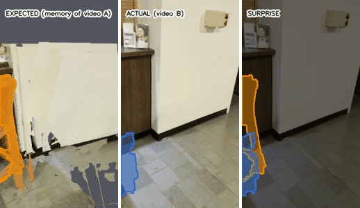

Roomnesia
What changed in the room, proven by what the cameras could see, and what it means for a robot. Interactive 3D results; drag to orbit, click a change to fly to it, press ▶ to replay.

Real office (SceneDiff benchmark)Two chairs and a stool moved between two phone videos. 3 of 3 found, 0 false reports. Synthetic room: standardChair moved and turned, bin removed, backpack added. Routes re-planned; "look here" viewpoints. Synthetic room: hardA flat rug removed (appearance channel), and changes the second video could not verify, correctly not reported.Code, benchmarks and method: github.com/neevmodh/Roomnesia. The viewers load three.js from a CDN.